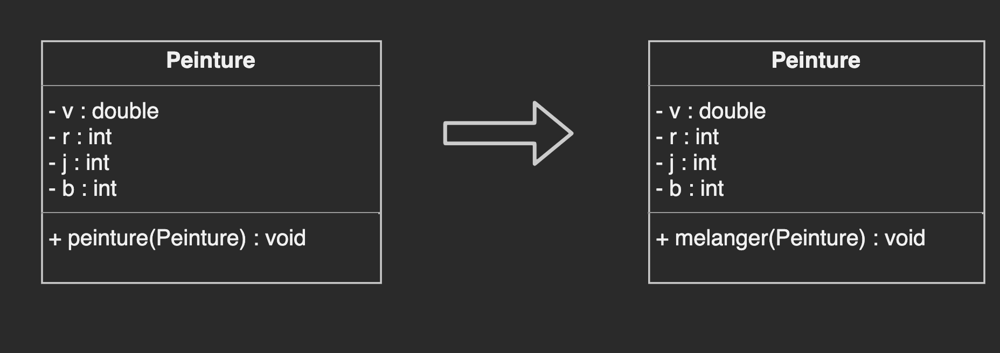
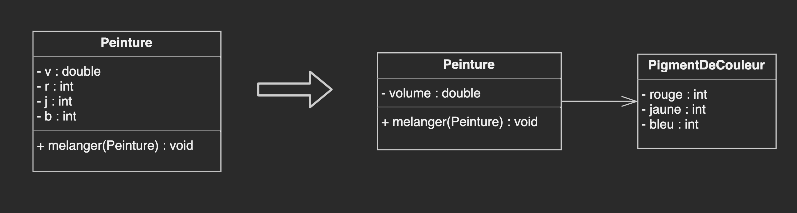
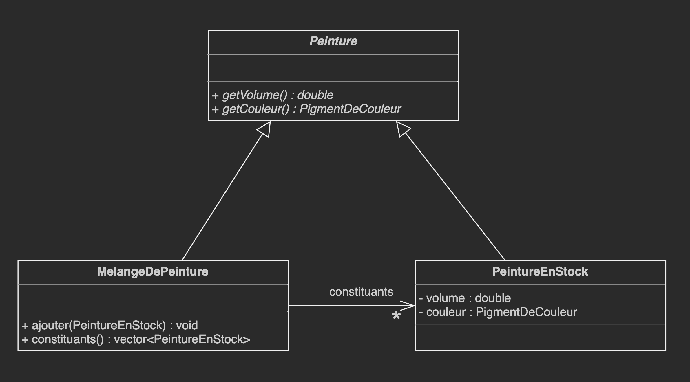
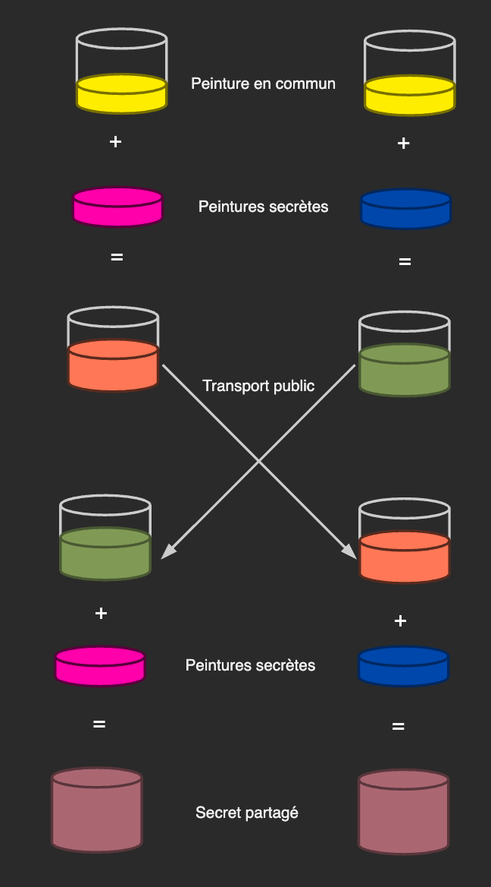
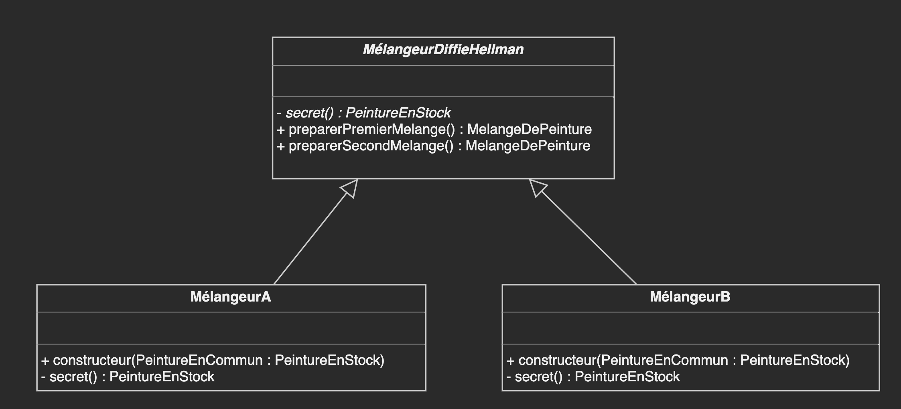

Eric Demers, Michel Gagnon et Lévis Thériault
Le but ultime d'un logiciel est de servir les utilisateurs.
Mais, ce même logiciel doit dans un premier temps servir les développeurs.
La refactorisation et l'extension d'une application de mélange de peinture
Les tests unitaires pour la classe Peinture
#include "catch.hpp"
#include "peinture.h"
TEST_CASE( "tests pour la classe peinture", "[Peinture]" ) {
// Créer une peinture jaune avec un volume de 100
Peinture jaune(100.0, 0, 50, 0);
// Créer une peinture bleu avec un volume de 100
Peinture bleu(100.0, 0, 0, 50);
// Mélanger la peinture bleu dans la peinture jaune
jaune.peinture(bleu);
// Résultat devrait être un volume de 200.0 de peinture verte
REQUIRE(jaune.getV() == Approx(200.0).epsilon(0.01));
REQUIRE(jaune.getB() == 25);
REQUIRE(jaune.getJ() == 25);
REQUIRE(jaune.getR() == 0);
}
La classe Peinture
class Peinture {
private:
double m_v;
int m_r;
int m_j;
int m_b;
public:
Peinture(const double& v,
const int& r,
const int& j,
const int& b): m_v{v}, m_r{r}, m_j{j}, m_b{b} {}
double getV() {return m_v;}
int getR() {return m_r;}
int getJ() {return m_j;}
int getB() {return m_b;}
void peinture(const Peinture& p) {
m_r = (p.m_r * p.m_v + m_r * m_v) / (p.m_v + m_v);
m_j = (p.m_j * p.m_v + m_j * m_v) / (p.m_v + m_v);
m_b = (p.m_b * p.m_v + m_b * m_v) / (p.m_v + m_v);
m_v += p.m_v;
}
};
Le nouveau nom donnera un indice suffisant au lecteur pour commencer à utiliser la classe, en particulier avec l'exemple fourni par le test.
Les tests unitaires pour la classe Peinture
#include "catch.hpp"
#include "peinture.h"
TEST_CASE( "tests pour la classe peinture", "[Peinture]" ) {
// Créer une peinture jaune avec un volume de 100
Peinture jaune(100.0, 0, 50, 0);
// Créer une peinture bleu avec un volume de 100
Peinture bleu(100.0, 0, 0, 50);
// Mélanger la peinture bleu dans la peinture jaune
jaune.melanger(bleu);
// Résultat devrait être un volume de 200.0 de peinture verte
REQUIRE(jaune.getV() == Approx(200.0).epsilon(0.01));
REQUIRE(jaune.getB() == 25);
REQUIRE(jaune.getJ() == 25);
REQUIRE(jaune.getR() == 0);
}
Extraire le concept de couleur
Les tests unitaires pour la classe Peinture
#include "catch.hpp"
#include "../src/peinture.h"
TEST_CASE( "tests pour la classe Peinture", "[Peinture]" ) {
// Créer une peinture jaune avec un volume de 100
Peinture jaune(100.0, PigmentDeCouleur(0, 50, 0));
// Créer une peinture bleu avec un volume de 100
Peinture bleu(100.0, PigmentDeCouleur(0, 0, 50));
// Mélanger la peinture bleu dans la peinture jaune
jaune.melanger(bleu);
// Résultat devrait être un volume de 200.0 de peinture verte
REQUIRE(jaune.getVolume() == Approx(200.0).epsilon(0.01));
REQUIRE(jaune.getPigment() == Pigment(0, 25, 25));
}
La classe PigmentDeCouleur
class PigmentDeCouleur {
private:
int m_rouge;
int m_jaune;
int m_bleu;
public:
PigmentDeCouleur(const int& rouge,
const int& jaune,
const int& bleu):
m_rouge{rouge}, m_jaune{jaune}, m_bleu{bleu} {}
int getRouge() {return m_rouge;}
int getJaune() {return m_jaune;}
int getBleu() {return m_bleu;}
PigmentDeCouleur melangerAvec(
const PigmentDeCouleur& autrePigment,
const double& ratio) const {
return PigmentDeCouleur(
(1 - ratio) * m_rouge + ratio * autrePigment.m_rouge,
(1 - ratio) * m_jaune + ratio * autrePigment.m_jaune,
(1 - ratio) * m_bleu + ratio * autrePigment.m_bleu);
}
bool operator==(const PigmentDeCouleur& p) const {
bool rouge = (std::abs(m_rouge - p.m_rouge) <= 1);
bool jaune = (std::abs(m_jaune - p.m_jaune) <= 1);
bool bleu = (std::abs(m_bleu - p.m_bleu) <= 1);
return (rouge && jaune && bleu);
}
};
Il semble que la classe Peinture possède deux responsabilités
Les tests unitaires pour la classe Peinture
#include "catch.hpp"
#include "../src/peinture.h"
TEST_CASE( "tests pour la classe Peinture", "[Peinture]" ) {
PigmentDeCouleur jaune(0, 50, 0);
PigmentDeCouleur bleu(0, 0, 50);
PeintureEnStock peinture1(1.0, jaune);
PeintureEnStock peinture2(1.5, bleu);
MelangeDePeinture mix;
mix.ajouter(peinture1);
mix.ajouter(peinture2);
REQUIRE(mix.getVolume() == Approx(2.5).epsilon(0.01));
REQUIRE(mix.getCouleur() == PigmentDeCouleur(0, 20, 30));
}
Les classes Peinture, PeintureEnStock et MelangeDePeinture
#include "pigmentDeCouleur.h"
#include <vector>
#include <numeric>
class Peinture {
private:
public:
virtual double getVolume() const = 0;
virtual PigmentDeCouleur getCouleur() const = 0;
virtual ~Peinture() = default;
};
class PeintureEnStock: public Peinture {
private:
double m_volume;
PigmentDeCouleur m_pigmentDeCouleur;
public:
PeintureEnStock(const double& volume,
const PigmentDeCouleur& pigmentDeCouleur):
m_volume{volume},
m_pigmentDeCouleur{pigmentDeCouleur}{}
double getVolume() const override {return m_volume;}
PigmentDeCouleur getCouleur() const override {return m_pigmentDeCouleur;}
};
class MelangeDePeinture: public Peinture {
private:
std::vector<PeintureEnStock> m_constituants;
public:
std::vector<PeintureEnStock> getConstituants() {return m_constituants;}
void ajouter(const PeintureEnStock& p) {
m_constituants.push_back(p);
}
double getVolume() const override {
return melanger().getVolume();
}
PigmentDeCouleur getCouleur() const override {
return melanger().getCouleur();
}
PeintureEnStock melanger() const {
return std::accumulate(begin(m_constituants), end(m_constituants),
PeintureEnStock(0, PigmentDeCouleur(0, 0, 0)),
[](const PeintureEnStock& a, const PeintureEnStock& b ) {
const double nouveauVolume = a.getVolume() + b.getVolume();
return PeintureEnStock(nouveauVolume,
a.getCouleur().melangerAvec(b.getCouleur(), b.getVolume()/nouveauVolume));
}
);
}
};
Illustration conceptuelle d'un échange de clés de Diffie-Hellman en cryptographie
Les classes MélangeurDiffieHellman, MélangeurA et MélangeurB
Les tests unitaires pour les classes MélangeurA et MélangeurB
#include "catch.hpp"
#include "../src/peinture.h"
#include "../src/melangeurDiffieHellman.h"
TEST_CASE( "tests pour la classe MelangeurDiffieHellman", "[MelangeurDiffieHellman]" ) {
PeintureEnStock peintureEnCommun(1, PigmentDeCouleur("FF", "ED", "00"));
MelangeurA melangeurA(peintureEnCommun);
MelangeurB melangeurB(peintureEnCommun);
auto resultat1 = melangeurB.preparerSecondMelange(melangeurA.preparerPremierMelange());
auto resultat2 = melangeurA.preparerSecondMelange(melangeurB.preparerPremierMelange());
REQUIRE(resultat1.getCouleur() == resultat2.getCouleur());
}
Les classes MélangeurDiffieHellman, MélangeurA et MélangeurB
#include "peinture.h"
class MelangeurDiffieHellman {
private:
PeintureEnStock m_peintureEnCommun;
virtual PeintureEnStock secret() = 0;
public:
MelangeurDiffieHellman(const PeintureEnStock& peintureEnCommun): m_peintureEnCommun{peintureEnCommun} {} ;
MelangeDePeinture preparerPremierMelange() {
PeintureEnStock peintureSecrete = secret();
MelangeDePeinture melange;
melange.ajouter(m_peintureEnCommun);
melange.ajouter(peintureSecrete);
return melange;
}
MelangeDePeinture preparerSecondMelange(MelangeDePeinture melange) {
PeintureEnStock peintureSecrete = secret();
melange.ajouter(peintureSecrete);
return melange;
}
virtual ~MelangeurDiffieHellman() = default;
};
class MelangeurA: public MelangeurDiffieHellman {
private:
PeintureEnStock secret() {
return PeintureEnStock(1, PigmentDeCouleur("FF", "00", "AB"));
};
public:
MelangeurA(const PeintureEnStock& peintureEnCommun): MelangeurDiffieHellman{peintureEnCommun} {}
};
class MelangeurB: public MelangeurDiffieHellman {
private:
PeintureEnStock secret() {
return PeintureEnStock(1, PigmentDeCouleur("00", "47", "AB"));
};
public:
MelangeurB(const PeintureEnStock& peintureEnCommun): MelangeurDiffieHellman{peintureEnCommun} {}
};